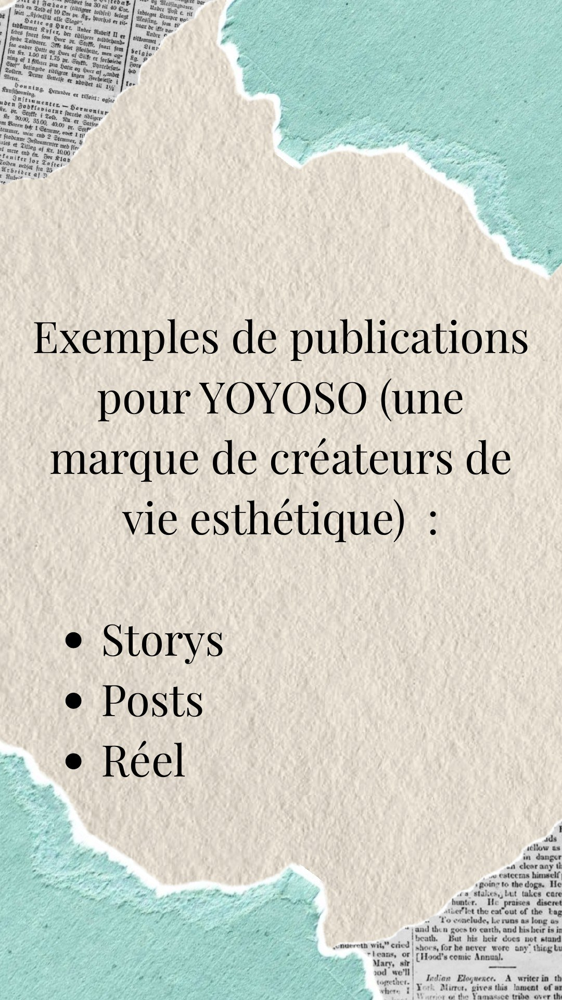

Contenus pour YOYOSO
Création de stories, posts et reels pour YOYOSO, une marque d'accessoires et de produits lifestyle. Un univers pastel, coloré et ludique, mettant en avant les nouveautés, les idées cadeaux et les produits du quotidien.

Contexte
YOYOSO est une enseigne spécialisée dans les accessoires, la papeterie, les peluches et les objets du quotidien. La marque propose des produits tendance, colorés et accessibles, avec un univers inspiré de la culture asiatique. Elle s'adresse principalement à une clientèle sensible aux tendances et à l'univers kawaii.
Objectifs
- Développer la visibilité de la marque sur les réseaux sociaux.
- Attirer de nouveaux abonnés.
- Mettre en avant les produits et les nouveautés.
- Créer de l'engagement (likes, commentaires, partages).
- Donner envie de découvrir les produits et de se rendre en magasin.
- Fidéliser la communauté.
- Renforcer l'image de marque grâce à un univers visuel cohérent.
Ma stratégie
La stratégie consiste à créer un compte qui reflète l'univers de YOYOSO, avec des visuels pastel, des mises en scène façon « coup de cœur » et des formats adaptés à Instagram. L'objectif est de mettre en avant les produits et les nouveautés, de suivre les tendances, de proposer des idées cadeaux et de créer de l'interaction avec la communauté. Les stories servent à interagir avec les abonnés, les posts à mettre un produit à l'honneur et les reels à regrouper plusieurs idées dans une même vidéo.
- Canva
- Instagram Stories
- Posts
- Réel
Contenus créés
Stories
Un sondage « Vous êtes plutôt accessoires ou papeterie ? » invite à choisir son camp en un tap, et révèle les goûts de la communauté. Une story d'annonce, au style cahier collé, signale l'arrivée des nouveautés en magasin.


Posts
Deux publications dans un cadre en forme d'interface Instagram : l'annonce du retour de la collection Sonny Angel, très attendue des collectionneurs, et un « coup de cœur du moment » pour mettre en valeur une peluche en situation.


Réel
« 5 idées cadeaux à petits prix » : un format court, facile à enregistrer et à partager, qui rassemble des produits variés dans un visuel dense et coloré.

Résultats & enseignements
- Adapter les contenus à la cible permet de mieux capter son attention.
- Les mises en scène rendent les produits plus attractifs et donnent envie de les découvrir.
- Les tendances Instagram permettent de proposer des contenus actuels.
- Les stories permettent de maintenir un lien régulier avec la communauté.
- Les idées cadeaux facilitent la découverte de produits auxquels les clients n'auraient pas forcément pensé.
- Varier les formats évite de rendre le compte répétitif.
- Les appels à l'action (commenter, voter, partager) encouragent la participation.
- Une communication régulière aide à maintenir l'intérêt des abonnés.
- Les publications peuvent inciter les clients à se rendre en magasin.